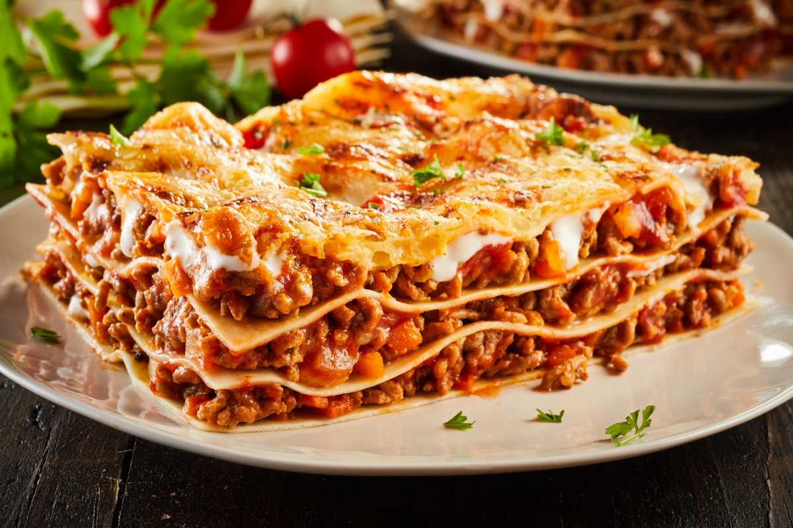

Lazanja

Lazanje za 20 minuta
Sastojci
- Kore za lazanju
- 400g mlevenog mesa
- gotova smesa za lazanju
Priprema
- Ukljuciti rernu i zagrejati na 250 stepeni
- pripremiti 400g samlevenog mesa
- pripremiti smesu za lazanju
- Izmesati meso i smesu za lazanju
- postaviti prvu koru u tepsiju
- zatim namazati sloj smese i tako do kraja
- Staviti u rernu i ostaviti je oko 20 min
- pole 20min izvaditi iz rerne i ostaviti da se ogladi pola sata prekriva krpom